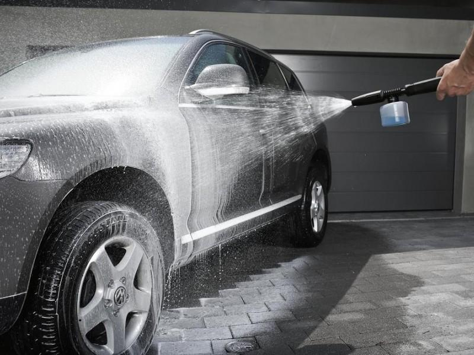
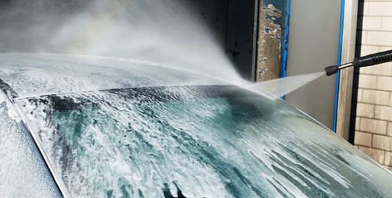

Бесконтактная мойка
Технология бесконтактной мойки лишена недостатка микроповреждений поверхности. Бесконтактная мойка появилась сравнительно недавно и только благодаря разработке мощных моющих средств на основе современных поверхностно-активных веществ и специальных добавок, усиливающих моющую способность. Благодаря своим уникальным моющим свойствам и хорошему пенообразованию эта группа автошампуней получила название активная пена или бесконтактная пена.
Технология бесконтактной мойки несложна. Нанесение раствора активной пены на автомобиль может осуществляться при помощи распылителя низкого давления с ручной или компрессорной подкачкой; или при помощи специального пистолета-пеногенератора, непосредственно подключаемого к моечному насосу высокого давления. Пеногенератор более производителен, дает обильную ровную пену, которая покрывает автомобиль, как снегом.
Процесс бесконтактной мойки занимает около десяти минут и включает в себя:
• облив кузова струями воды под высоким давлением, чтобы сбить грязь и смочить поверхность;
• нанесение специального моющего средства - активной пены - при помощи распылителя или пеногенератора. Активная пена - это концентрированная щелочная химия с высокой адсорбирующей способностью. Она отличается хорошей текучестью, что позволяет ей проникать в места, недоступные при обычной ручной мойке;
• выдержку 1 - 2 минуты для активации пены;
• смыв раствора, впитавшего грязь, водой из аппарата высокого давления (АВД);
• удаление воды, сушку.
Для получения лучшего эффекта следует нанесение пены и смыв ее производить горизонтальными движениями, двигаясь постепенно снизу вверх по бортам автомобиля, сначала вымыв боковины, потом перед и корму, а в конце крышу, багажник и капот. В этой технологии мойки остается элемент контакта - удаление воды водосгоном и протирка салфеткой. Лучше использовать мягкие силиконовые водосгоны - их материал не позволяет внедряться в рабочую кромку песку - главному врагу окраски. Салфетка из специальной искусственной замши завершает сушку. Можно полностью исключить контактное воздействие при мойке и сушке. Для этого нужно обработать кузов сразу после мытья специальным обливочным воском - ускорителем сушки, капли воды будут сами скатываться и кузов будет достаточно слегка обдуть воздухом, чтобы он стал сухим.
Чтобы при бесконтактной мойке избежать неприятностей, нужно четко соблюдать инструкции по применению бесконтактной пены и придерживаться следующих правил:
• не допускать высыхания раствора активной пены на кузове, высохший раствор образует на поверхности белесые пятна, которые трудно смыть, удалить их можно, протерев поверхность легкой жидкой полиролью;
• не наносить раствор на горячий капот и на кузов, нагревшийся на солнце, обязательно облейте кузов водой перед нанесением пены, следите за капотом и крышей, там раньше всего высыхает пена и могут образоваться пятна;
• разбавлять пену точно в соответствии с рекомендациями изготовителя, обычно используются 5 - 10% растворы; значительное увеличение концентрации активной пены в растворе может привести к пятнам на окраске;
• естественно, что нужно помнить о технике безопасности, вентилировать помещение, использовать спецодежду, перчатки и очки.
При бесконтактной мойке автомобилей активной пеной наилучшие результаты сочетания качества и экономической эффективности достигаются при применении пеногенераторов высокого давления. Эти пеногенераторы обеспечивают приготовление и распыление более однородной и мелкоячеистой пены, чем распылители - опрыскиватели низкого давления, и позволяют значительно сократить время на обработку автомобиля. В используемых на мойках пистолетах-пеногенераторах пена образуется в результате дробления и распределения воздуха в растворе пенообразователя - бесконтактного автошампуня.
.jpg)
Технология бесконтактной мойки имеет неоспоримые преимущества при мытье грузовиков. Время мойки огромной фуры сокращается с нескольких часов до 20 минут, причем силами одного человека. Проходка одного моечного поста увеличивается в 10 раз! Мощная струя пены из пеногенератора легко достает до самого верха дальнобойной фуры, не нужно никаких подставок, стремянок, швабр и прочего.
Также рекомендуем
Наномойка Антидождь Инновационный автошампунь Полировка «Жидкое стекло»